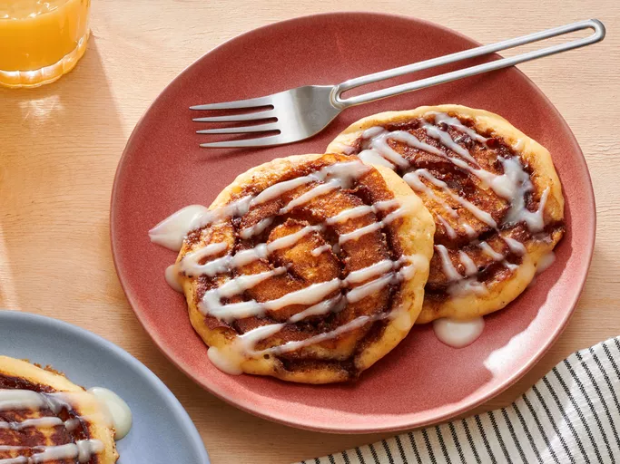

Home
cinnamon

Description
Sweet and delicious buttermilk pancakes with a butter, brown sugar, and cinnamon swirl filling.
These are great any time of the day and less time consuming than making real cinnamon rolls!
ingredients
- 5 ½ tablespoons packed brown sugar
- ¼ cup butter, melted
- 1 ½ teaspoons ground cinnamon
steps
- Stir milk and vinegar together in a bowl; set aside until milk "sours", about 5 minutes.
- Gather all ingredients.
- Mix flour, white sugar, baking powder, baking soda, and salt together in a separate bowl.